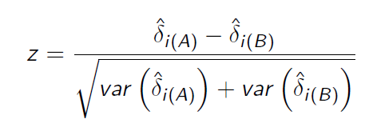

Dumbs
Dude
Dude’s aim equation:

La mira: centra il bersaglio
Methods: AK-47
Risultato: carcere
Brov
📖 Storia del Brov che Chilla un Tot C’era una volta un brov, chiamato Brov Supreme, che chilla così tanto che il time.sleep(∞) l’ha inventato lui. Il brov non corre. Plotta. E mica con Paint… No, no, il brov usa ggplot2, il pacchetto R (R Core Team 2025) sviluppato da (Wickham 2016). Perché se non plotti con stile, stai solo buttando punti a caso. 🎯📊
Un giorno, mentre chilla al bar università con una RedBull in una mano e l’RStudio aperto nell’altra, arriva Epifania, Anselmi, e Robusto (2024) e gli dice:
“Fratè, hai letto il mio paper sugli Linear Mixed Effects Models?”
Il brov sorseggia, alza un sopracciglio, e risponde:
“L’ho letto, l’ho capito… e poi l’ho trasformato in un meme con devianza spiegata a 3 cifre decimali. 🔥📉”
Il brov? Chilla con significatività p < 0.001. Fa modelli lineari giusto per sport, e quando gli dicono “sei fuori standard”, lui risponde:
“I’m a random effect, baby.”
Quando tutti vanno fuori di testa con l’homoscedasticità, lui dice:
“Relax, brov. Le residuals devono respirare.”
E mentre il resto della classe sta ancora cercando di capire se usare lm() o lmer(), lui sta già testando gli slope randomici con stile e con calma zen.
MORALE DELLA STORIA: Non cercare di diventare come Brov Supreme. Fai il tuo modello. Ma se vuoi chillare un tot… usa ggplot2 e credi in te come Epifania, Anselmi, e Robusto (2024) crede nei suoi mixed models.
Man
ma che bella colonna, cazzo!
ma che bella colonna, cazzo!
ma che bella colonna, cazzo!
ma che bella colonna, cazzo!
G
“Oh brovvv, ascolta il G. Te lo dico col cuore e col cappuccio calato: se lei visualizza e non risponde… non è ghosting, è che ha paura del tuo potenziale, fraté. 🔥💯
Noi non ci innamoriamo, brov… noi ci concentriamo. Sul cash, sul grind, sulla gloria.
Tipo oggi ho visto il mio riflesso in vetrina… gli ho detto: ‘continua così king, un giorno ci compra pure quella vetrina’. 🕶️💸
E ricordati brov: se la vita ti dà limoni… fanne un business, apri un franchising e chiamalo “Lemonade by G & Brov™” 🍋😎
Stay real, stay up. Ci becchiamo in alto, mai in basso. Pace, rispetto… e Wi-Fi potente. 💥📶“**
Brov and g having fun